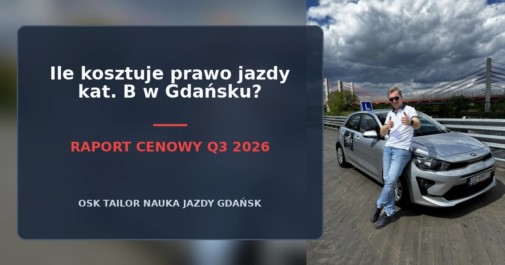

Jesteśmy w TOP 10 zdawalności wg PORD Gdańsk
Roczna zdawalność egzaminu praktycznego naszych kursantów, o 1,3 p.p. wyższa niż średnia gdańskich szkół (II poł. 2025 – I poł. 2026).
OSK Tailor to rodzinna szkoła jazdy w samym sercu Gdańska. Uczymy nowocześnie, bez nerwów i presji. Niezależnie od tego, czy wybierasz manual (Kia Rio 4), czy automat (Skoda Kamiq), dopasujemy tempo i grafik jazd dokładnie do Ciebie.
Wsiadasz za kierownicę pewnie i bez stresu, płynnie pokonujesz kolejne skrzyżowania, a egzaminator wręcza Ci dokument potwierdzający zdanie egzaminu. Z nami ten scenariusz stanie się rzeczywistością.
Roczna zdawalność egzaminu praktycznego naszych kursantów, o 1,3 p.p. wyższa niż średnia gdańskich szkół (II poł. 2025 – I poł. 2026).
Uczysz się na takich samochodach, na jakich będziesz zdawać egzamin w PORD.
Siedziba 5 minut od Dworca Głównego. Nie tracisz czasu na dojazdy i od pierwszej minuty ćwiczysz na trasach egzaminacyjnych.
Sami jesteśmy rodzicami. Z empatią i szacunkiem pracujemy z kursantami w każdym wieku i budujemy ich pewność siebie za kierownicą.
Przepisy ruchu drogowego poznajesz we własnym tempie na platformie e-learningowej, gdziekolwiek jesteś. Konsultacje online lub w biurze.
Niezależne wyróżnienie potwierdzające jakość usług OSK Tailor. Sprawdź nagrodę.
Rynkowe i zawsze w 100% transparentne ceny, bez ukrytych opłat. Płatność możesz rozłożyć na dwie raty 0%.
Zapisz się na kursObawiasz się formalności? Nasze biuro i instruktorzy pomogą Ci na każdym etapie kursu.
Lekarz, zdjęcie, Urząd Miasta lub Starostwo: podpowiemy, jak to zorganizować. Zobacz instrukcję uzyskania PKK (PDF).
Dostajesz dostęp do portalu i uczysz się kiedy i gdzie chcesz, a potem zdajesz egzamin teoretyczny w PORD Gdańsk. Biuro i instruktorzy pomagają, kiedy potrzebujesz.
30 godzin jazd z instruktorem zleci jak z bicza trzasnąć. Nauczymy Cię bezpiecznej jazdy, zawsze z klasą na szosie.
Badanie lekarskie ok. 200 zł · zdjęcie ok. 50 zł · egzamin teoretyczny w PORD Gdańsk 59 zł · egzamin praktyczny w PORD Gdańsk 239 zł · wydanie prawa jazdy 100 zł.
Średnia zdawalność egzaminu praktycznego kat. B w PORD Gdańsk w porównaniu ze zdawalnością OSK Tailor:
| Podmiot / wskaźnik | II półrocze 2025 | I półrocze 2026 | Zdawalność roczna (łączna) |
|---|---|---|---|
| Średnia w PORD Gdańsk (szkoły gdańskie) | 44,9% | 43,2% | 44,0% |
| OSK Tailor (MK Drift) | 48,8% | 41,2% | 43,6% |
Dane dotyczą wyłącznie egzaminów praktycznych na prawo jazdy kat. B w PORD Gdańsk. Zdawalność roczna to ważona średnia ze 140 egzaminów OSK Tailor (MK Drift) i 16 138 egzaminów szkół z Gdańska w okresie 01.07.2025 – 30.06.2026. W raportach PORD szkoła występuje pod nazwą rejestrową MK Drift Michał Krawiec (nr ew. 02002261). Ogólna średnia PORD Gdańsk dla wszystkich zdających w tym okresie (z powiatami zamiejscowymi) wyniosła 32,35%.
Nasi kursanci zdają egzamin praktyczny o ponad 11 punktów procentowych częściej niż przeciętny zdający w PORD Gdańsk. Nie wybieramy „wygodnych” miesięcy: publikujemy kompletne dane za każde półrocze. Wysoka zdawalność to dla Ciebie mniej poprawek, niższe opłaty w PORD i mniej stresu.
„Świetni instruktorzy! Otrzymałem odpowiedź na każde pytanie i wiele cennych wskazówek do egzaminu, ale też do bezpiecznej, ekonomicznej jazdy, a wszystko w miłej atmosferze. Polecam, egzamin zdałem za pierwszym razem.”
karciarz 04, Google
„Pani Iza świetnie mnie przygotowała do egzaminu, jazdy z nią to był wartościowy czas w dobrej atmosferze, jeszcze raz dziękuję za przygotowanie!”
Eryk, Google
„Bardzo przyjemna atmosfera oraz wysokie kompetencje instruktorów, to połączenie sprawia, że zdanie egzaminu za 1 razem po nauce w tej szkółce nie jest niczym ciężkim.”
Szymon Uhlenberg, Google

Zasady na przejeździe kolejowym i nowe kary: nawet 3 miesiące bez prawa jazdy.

Barometr cen kursów kat. B w gdańskich szkołach jazdy i opłaty dodatkowe.

Nasza wizytówka w lokalnym katalogu firm i prośba o Twoją opinię.
Kurs standardowy kosztuje 4200 zł. Do tego dochodzą opłaty niezależne od szkoły: badanie lekarskie ok. 200 zł, zdjęcie ok. 50 zł, egzamin teoretyczny w PORD 59 zł, egzamin praktyczny w PORD 239 zł i wydanie prawa jazdy 100 zł.
Tak. Płatność można rozłożyć na dwie raty 0%, bez udziału banku i dodatkowych odsetek.
Na manualu uczymy na Kii Rio 4, identycznej jak auta egzaminacyjne w PORD Gdańsk. Kurs na automacie prowadzimy na nowej Skodzie Kamiq.
Jedna godzina jazd dodatkowych trwa pełne 60 minut. Jazdy doszkalające prowadzimy także dla kursantów z innych szkół.
Tak. Zapisy prowadzimy na bieżąco, więc kurs możesz zacząć w każdej chwili.
Zadzwoń, napisz SMS, WhatsApp lub e-mail. Rozmowa do niczego Cię nie zobowiązuje: chętnie odpowiemy na pytania i dobierzemy kurs oraz harmonogram jazd.
Pon.–pt. 10:00–18:00, sob.–niedz. nieczynne. Przed wizytą napisz SMS/Messenger lub zadzwoń, upewnimy się, że ktoś na Ciebie czeka.